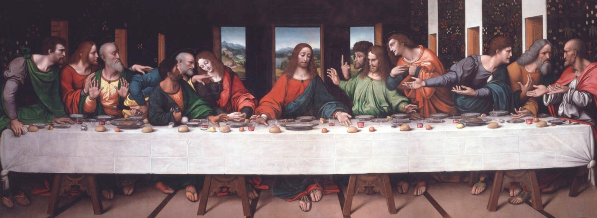
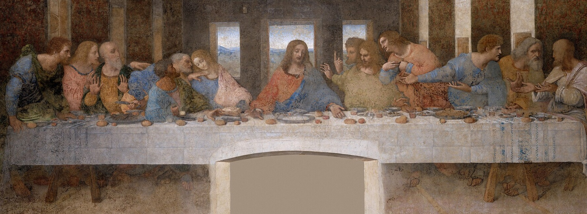
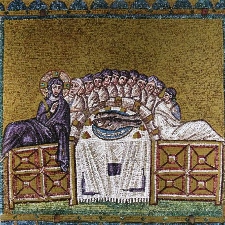
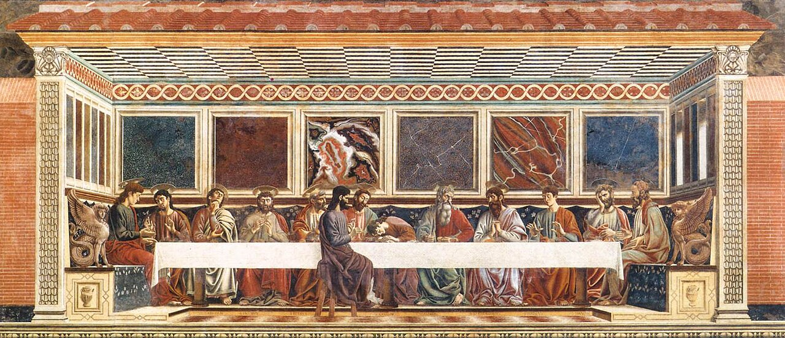
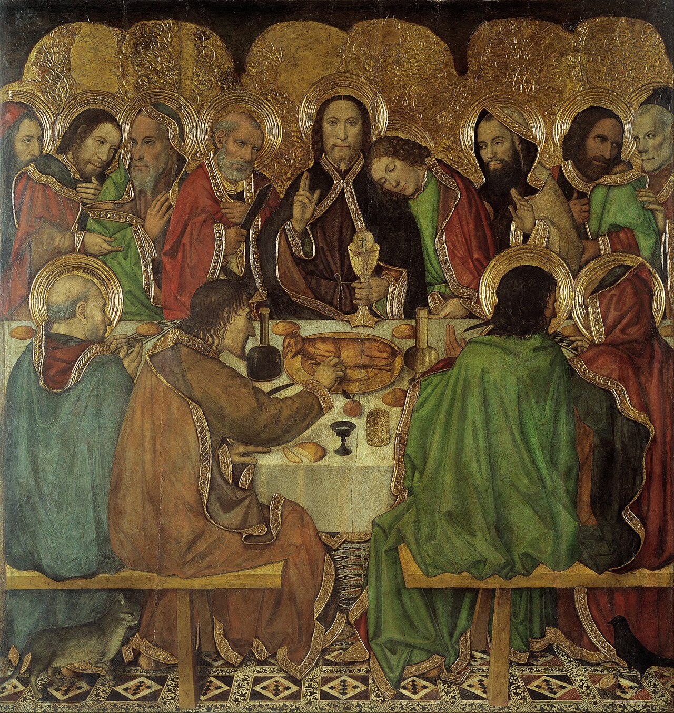
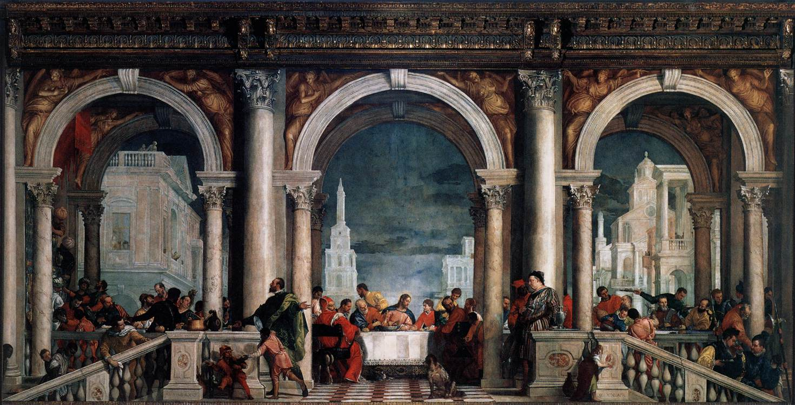
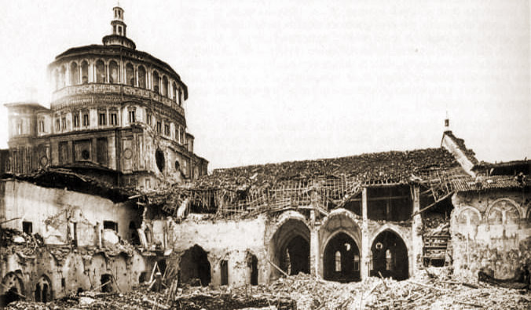
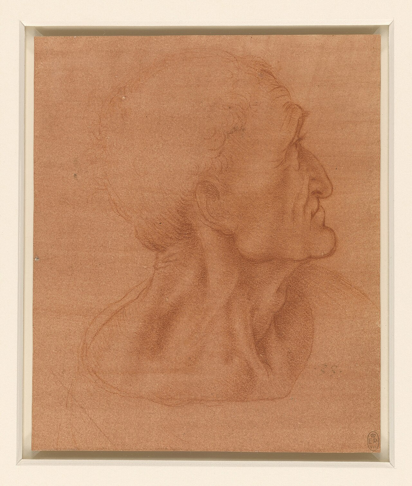
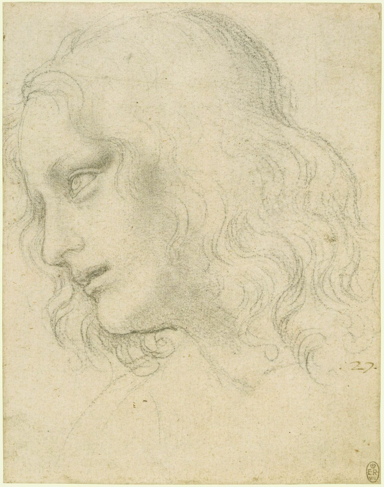

L'últim sopar de Leonardo
Tretze homes asseguts en filera, estovalles de lli, gots de vidre i cap anyell. Gairebé res del mural més famós del món no encaixa amb la Jerusalem del segle I — ni amb un sol evangeli. Una autòpsia antropològica, bíblica i material de la paret més sobreinterpretada d'Europa.
Cap al 1497, Leonardo da Vinci pintava la paret del fons del refectori de Santa Maria delle Grazie, a Milà: 460 per 880 centímetres davant dels quals els frares dominics menjaven cada dia en silenci, amb la Crucifixió de Montorfano a la paret de l'altra punta.1,2,3 Cinc segles després, aquella paret és la imatge que tothom té de l'últim sopar de Jesús.
Però mirada amb tres ulls alhora, l'escena es desfà: com es menjava de debò a Judea cap a l'any 30, què expliquen les cinc versions del Nou Testament, que no coincideixen, i què hi va posar el Milà de 1495.
1. Com es menjava de debò a Jerusalem?
Per mirar el mural de Leonardo amb ulls nets, primer cal desaprendre el costum més automàtic de l'Occident modern: pensar que «sopar» vol dir seure en cadires d'esquena recta al voltant d'una taula alta amb estovalles i coberts. Al Mediterrani antic, aquesta postura no només no era la norma en un banquet festiu, sinó que era pròpia del servei o dels infants.
A la Judea del segle I —com a Roma i a Grècia—, un sopar solemne se celebrava reclinat sobre el costat esquerre en llits baixos o matalassos disposats en forma d'U (el triclinium).4,5 Els comensals recolzaven el pes del tors sobre el colze esquerre per deixar lliure la mà dreta amb què agafaven bocins de pa i menjar d'un plat comú, mentre les cames i els peus quedaven estesos cap enfora, lluny de la taula baixa central. La tradició jueva posterior va adoptar aquesta postura aristocràtica com a signe ritual de llibertat: la Mixnà (codificada cap al 200 dC) estipula a Pessahim 10:1 que «fins i tot el més pobre d'Israel no menjarà [la nit de Pasqua] fins que es reclini».6
Aquesta mecànica del cos explica dues escenes dels evangelis que resultarien físicament impossibles en la fila de cadires de Leonardo. Quan l'Evangeli de Joan descriu el deixeble estimat reclinat «al pit» de Jesús (Jn 13,23), i com en rebre el senyal de Pere només s'ha d'inclinar enrere per parlar-li a cau d'orella (Jn 13,24–25), descriu exactament la geometria diagonal de dos cossos recolzats sobre el colze esquerre. I quan Jesús s'aixeca per rentar els peus als deixebles (Jn 13,5), no els ha de fer sortir d'entre cadires i taules: els peus sobresurten lliurement darrere els divans.7,8
Tampoc no era un «Séder»: el ritual rabínic, amb les quatre copes i la Haggadà domèstica, va prendre forma després de la destrucció del Temple l'any 70 dC. Abans, la Pasqua girava al voltant de l'anyell immolat al Temple i menjat en grups de 10 a 20 persones.6,9
I quant a qui hi havia a la sala, els evangelis no coincideixen: Marc (14,17) i Mateu (26,20) parlen «dels Dotze», Lluc (22,14) «dels apòstols», i el capítol 13 de Joan no fa servir mai el mot «els Dotze» sinó «els deixebles».10
Baixa per veure com va girar el cos humà al voltant de la taula al llarg de mil cinc-cents anys, des dels divans baixos de Jerusalem fins a la paret recta de Milà.
Cinc-cents anys després, encara jeien. El mosaic de Sant'Apollinare Nuovo (c. 500–526) i l'Evangeliari de Rossano mostren la variant tardoromana del llit semicircular (stibadium o sigma). Jesús ocupa l'extrem esquerre —el lloc d'honor romà—, hi ha pa i dos peixos grossos al centre, i Judes encara és dins el cercle.4,5
Asseguts, rectes i amb Judes exiliat. Entre els segles IV i VI l'Europa occidental abandona els divans per la desaparició del mobiliari romà, el costum popular de seure en bancs i un nou decor cristià. La taula de cavallets separa el grup: onze o dotze homes amb aurèola darrere, i Judes aïllat sense aurèola sol al costat frontal.4,5
Tots tretze a la mateixa banda. Leonardo trenca la tradició florentina: esborra totes les aurèoles, asseu els tretze comensals al costat llunyà com un fris teatral perquè els frares vegin totes les cares, i col·loca Judes dins el grup però enfonsat en penombra. La llum entra per l'esquerra exactament com a les finestres reals de la sala.2,3
Obres d'època i planta esquemàtica (no a escala). Fonts i dades del gràfic →
2. Un sopar, cinc textos que no encaixen
Si l'escena física va canviar completament en travessar els segles, el text bíblic tampoc no és un guió únic. Al Nou Testament hi ha cinc versions diferents de l'Últim Sopar redactades al llarg de gairebé mig segle (c. 53–100 dC), i les fissures entre elles revelen com les primeres comunitats van passar d'un sopar comunitari real al ritu litúrgic de l'Eucaristia.
El testimoni escrit més antic no és cap evangeli, sinó una carta que l'apòstol Pau envia cap als anys 53–55 dC a l'església de Corint (1 Corintis 11,17–34).7 L'ocasió no era cap debat teològic abstracte, sinó una baralla de classe a taula: els membres rics de la comunitat s'instal·laven abans dins el triclinium i menjaven el seu propi sopar, mentre els treballadors i esclaus que arribaven tard al pati passaven gana.11 Pau no esmenta ni la Pasqua ni Judes.
Quan arribem als evangelis, les divergències s'eixamplen. Marc (c. 70) i Mateu (c. 80–85) situen l'àpat la nit de Pasqua, però cap dels dos no inclou el manament «feu això en memòria meva». Només Mateu posa nom i diàleg a Judes a taula: «Tu ho has dit» (Mt 26,25).7
Els manuscrits de Lluc (c. 80–90) també divergeixen: els grecs principals porten dues copes, una abans del pa i una altra «després de sopar» amb «la nova aliança en la meva sang» (Lc 22,19b–20), però el Còdex Bezae omet aquests versicles i deixa només Copa → Pa, sense menció de la sang vessada ni de la memòria.12
I finalment arriba Joan (c. 90–100), que capgira el rellotge i el menú. Segons Joan, el sopar té lloc abans de la festa de la Pasqua (Jn 13,1), de manera que l'endemà al matí les autoritats jueves encara no poden entrar al pretori romà «per no contaminar-se i poder menjar la Pasqua» (Jn 18,28), i Pilat sentencia Jesús el dia de la Preparació (14 de nissan, Jn 19,14), just a l'hora en què s'immolen els anyells al Temple. La majoria d'historiadors crítics troben aquesta cronologia més versemblant que una execució en plena festa del 15 de nissan. I el cop més sorprenent de Joan és el ritual: en tot el sopar de Joan no hi ha cap institució del pa ni del vi. Al seu lloc, Jesús es treu el mantell, se cenyeix el davantal de lli dels esclaus domèstics i renta els peus dels deixebles (Jn 13,4–5), invertint la jerarquia social de la taula.7,8,13
Per a un jueu del segle I, les paraules «beveu la meva sang» xocaven contra un tabú bíblic: Levític 17,10–14 prohibeix ingerir sang perquè «la vida de la carn és en la sang». I fora del cànon, el manual judeocristià de la Didakhé conserva una pregària d'eucharistia primerenca amb la copa abans del pa i sense cap menció del cos, la sang ni la creu.14
Mirar la matriu deixa clara una cosa que sorprèn gairebé tothom: Leonardo no va il·lustrar un sol evangeli, sinó un muntatge cinematogràfic. De Mateu 26,23 en pren el gest exacte de les mans que coincideixen al plat («el qui ha sucat la mà amb mi al plat»), ja que la mà dreta de Crist i la mà esquerra de Judes s'estenen gairebé tocant-se. Però tot seguit gira cap a Joan 13,24 per fer inclinar Pere darrere Judes cap a l'orella de Joan demanant-li qui és el traïdor —i li posa un ganivet ocult a la mà dreta, anticipant l'escena de Getsemaní (Joan 18,10).3,15
I encara hi ha una subtilesa més profunda que va demostrar l'historiador Leo Steinberg: durant un segle els crítics discutien si Leonardo havia pintat l'anunci de la traïció o la institució de l'Eucaristia. Steinberg va provar que fa totes dues coses alhora: les mans obertes de Crist desencadenen l'ona de xoc de la sospita i, al mateix instant, assenyalen el pa i el got de vi transparent davant seu.15
3. Menjar dins el quadre: silenci, poder i «preceptor sense llengua»
Per entendre per què Il Cenacolo sembla respirar com una sala real, cal recordar qui pagava la paret. L'obra va ser encarregada pel duc de Milà, Ludovico Sforza «il Moro», que estava convertint Santa Maria delle Grazie en el mausoleu dinàstic de la seva nissaga. Quan la seva jove esposa va morir de part a principis de gener de 1497, als vint-i-un anys, Ludovico sovint venia a sopar en silenci al refectori durant el dol, sota les tres llunetes superiors amb els escuts dels Sforza que Leonardo ja hi havia pintat.2,16
La paret era una màquina òptica dissenyada per fondre la taula dels frares amb la de Crist. Els restauradors van trobar el petit forat d'un clau a la templa dreta de Jesús: des d'allà Leonardo va estirar cordills sobre l'arrebossat per traçar totes les línies dels cassetons del sostre. La llum del mural ve de l'esquerra, com la de les finestres reals del refectori.2,3,15
Però el veritable laboratori antropològic de Leonardo era el cos humà. Als seus escrits sobre pintura explica que un pintor ha de mostrar no només la figura, sinó «el concepte de la seva ment» a través dels gestos, i recomana als artistes observar les persones sordes —a qui anomena sense burla un «preceptor sense llengua» (precettore sanza lingua) que ensenya millor amb fets que tots els altres amb paraules.17 Al seu quadern de butxaca hi va anotar un guió etnogràfic de reaccions abans de pintar: «Un que bevia ha deixat el got al seu lloc i gira el cap cap al qui parla; un altre entrellaça els dits amb les celles arrufades; un altre obre els palmells i arronsa les espatlles fins a les orelles...».18
El resultat és una coreografia de quatre tríades simètriques (3+3 | Crist | 3+3) que amaga la revolució moral més radical del quadre: Leonardo torna a asseure Judes al mateix costat dels altres onze. Durant segles, la pintura europea havia expulsat Judes sol a la banda davantera de la taula perquè l'espectador l'assenyalés a l'instant. Leonardo li treu aquest exili i li treu les aurèoles a tothom: el traïdor ja no és un monstre marcat des de fora, sinó un membre del grup que trenca la confiança des de dins, separat únicament perquè recula en ombra (el seu cap queda físicament més baix que els dels companys), subjecta la bossa i tomba el saler.3,15
I quan la gran restauració de 1978–1999 va retirar segles de repintades de sobre la taula, va aparèixer un menú que cap llibre d'història sagrada no havia previst. No hi ha cap anyell pasqual, sinó pans rodons llevats, gots de vidre transparent amb vi i plats de peltre on es reflecteixen les túniques.19


4. Mil anys de taules, poder i censura
Leonardo no va pintar en el buit: la seva revolució només s'entén quan es posa dins de mil anys d'història visual del Sant Sopar. Cada societat hi va projectar la seva pròpia manera de seure, la seva vaixella i els seus enemics morals.
En el catàleg de vint obres reals que hem reunit des del segle VI fins al XVI, el salt és nítid. A l'Antiguitat tardana (Sant'Apollinare Nuovo a Ravenna i l'Evangeliari de Rossano), Jesús i els apòstols encara s'estiren en sigma al voltant de peixos i pans. Quan el romànic i el gòtic europeus asseuen els comensals en taules rectes, Judes cau fora del grup: seu sol en un tamboret a la banda frontal, cara a cara amb Crist, sovint de perfil, o amb un gat o un dimoni al costat, com a la pintura mural catalana de la Catedral de la Seu d'Urgell o al fresc d'Andrea del Castagno (1447).20 A l'art del nord d'Europa del final de l'edat mitjana, Judes es retratava sovint amb trets deformats i, de vegades, amb una caricatura de jueu, i amb la túnica groga o la bossa de diners com a atributs: així el traïdor es va lligar visualment als jueus.29 A l'Europa cristiana, la traïció per trenta monedes de plata va acabar convertint-se en un estereotip hostil dels jueus com a traïdors i cobdiciosos.30
Les versions catalanes mostren la mateixa adaptació local. A la taula del Museu de Solsona hi ha gots i gossos sota la taula,21 i a la predel·la del Retaule de Sant Agustí de Jaume Huguet (MNAC), quatre apòstols seuen d'esquena a l'espectador mentre Judes es distingeix únicament perquè és l'únic sense aurèola daurada.22
Setanta-cinc anys després de Leonardo, el món de la Contrareforma va demostrar fins a quin punt pintar aquell sopar era un camp de mines polític. El 18 de juliol de 1573, el tribunal de la Inquisició de Venècia va citar Paolo Veronese per haver pintat un monumental Últim Sopar ple de bufons, nans i soldats alemanys, i també de lloros i gossos, en una lògia palladiana. L'ordre inquisitorial li exigia refer l'obra al seu compte en tres mesos; Veronese va resoldre el conflicte sense tocar gairebé ni una pinzellada: va canviar el títol pel d'El banquet a casa de Leví (Lluc 5).23








5. L'experiment de control: cinc segles d'una paret que mor
Té una ironia tècnica que el quadre més cèlebre de Leonardo sigui també la víctima de la seva pròpia impaciència experimental. El fresc tradicional (buon fresco) exigeix pintar a tota velocitat sobre guix humit; aquest rellotge implacable era incompatible amb la lentitud analítica de Leonardo, amb les seves veladures i amb les hores que passava davant la paret sense tocar el pinzell.1,2,3 Per poder corregir a poc a poc, va pintar en sec (a secco) sobre un mur prim orientat al nord i mitger amb les cuines del convent. Sense soldadura química amb el mur, la pintura va començar a clivellar-se gairebé de seguida.2,3
El mateix refectori ens va deixar un experiment de control natural. A la paret sud oposada, la Crucifixió de Montorfano en buon fresco clàssic —sotmesa a la mateixa humitat i al mateix bombardeig— ha arribat gairebé intacta fins avui. En canvi, els retrats de Ludovico Sforza i la seva família que el propi Leonardo hi va afegir a secco als peus cap al 1497 pràcticament s'han esborrat del mur.3
Baixa per recórrer la química d'aquestes dues parets i cinc segles de ferides, repintades, bombes i rescats sobre el mural.
Ja queia abans de morir Leonardo. A finals de desembre de 1517, un visitant anota que l'obra «incomincia ad guastarse». Quan Giorgio Vasari hi va, el maig de 1566, ja només hi veu «una macchia abbagliata», una taca confusa.24
L'ús quotidià i les males cures. El 1652, els frares obren una porta cap a la cuina i amputen els peus de Crist. Al segle XVIII el repinten i el raspen gairebé del tot, fins que s'atura la feina; les tropes franceses usen la sala de magatzem i quadra el 1796, s'inunda el 1800, i el 1821 un restaurador l'esmicola intentant arrencar-lo.2,25
Capes i fets reals; gruixos i pla del refectori, esquemàtics. Fonts i dades del gràfic →

_-_bombardamento_del_1943.jpg){kind=link}




6. La paret com a test de Rorschach
Potser el fenomen antropològic més fascinant de L'últim sopar no passa el 1498, sinó avui. Per què un mural del Renaixement milanès s'ha convertit en l'objecte preferit de novel·les conspiratives, lectures esotèriques i teories virals?
Hi convergeixen dues causes materials. La primera és que Leonardo va eliminar les aurèoles i les inscripcions medievals que etiquetaven cada personatge; la segona és que la tècnica a secco va deixar les mans, els plats i els plecs de roba reduïts durant segles a taques borroses. Quan una imatge cèlebre perd definició i etiquetes, funciona exactament com una taca de Rorschach: cada segle hi llegeix les seves obsessions. El segle XIX romàntic —amb el cèlebre assaig de Goethe (1817)— hi va llegir una tragèdia psicològica burgesa; a les acaballes del segle XX, el fenomen editorial de Dan Brown (El Codi Da Vinci, 2003) hi va projectar una trama secreta sobre Maria Magdalena, una «mà sense cos» amb un ganivet i un Sant Greal desaparegut.27
Quan contrastem cada mite contemporani amb les proves materials —els dibuixos de Windsor i la còpia primerenca de Giampietrino—, totes les peces encaixen sense conspiracions, i encara apareixen girs històrics més sorprenents que la ficció.
Tornem per un segon a la paret nord de Santa Maria delle Grazie. Quan retires totes les projeccions romàntiques, les conspiracions editorials i les cadires anacròniques, queda un objecte històric molt més humà i fascinant: un fresc que no és fresc, pintat en un menjador monàstic sota el dol d'un duc de Milà, que mostra tretze jueus del segle I asseguts a taula quan en realitat haurien menjat reclinats sobre el colze esquerre, i que durant cinc segles ha anat revelant —com un mirall fissurat— qui érem cada vegada que ens hi atansàvem a mirar.
Paraules clau
- Triclinium i sigma
- Disposicions de banquet grecoromanes —en U de tres llits o en semicercle (stibadium)— on els comensals jeien sobre el colze esquerre deixant la mà dreta lliure i els peus cap enfora.
- Moti dell'animo
- «Moviments de l'ànima»: teoria expressiva de Leonardo que vincula la psicologia interior als gestos del cos, estudiada observant persones sordes (precettore sanza lingua).
- A secco vs. Buon fresco
- Pintar en sec (tremp i oli sobre guix i blanc de plom, com Leonardo a la paret nord) permet retocar a poc a poc però no es solda químicament amb el morter, a diferència del fresc sobre calç humida (Montorfano a la paret sud).
Dades i fonts
Metodologia
Aquest article ha estat elaborat contrastant totes les afirmacions amb fonts primàries i acadèmiques revisades per experts. El catàleg històric reuneix 20 obres reals documentades en fitxes museístiques oficials (segles VI–XVI), la matriu textual segueix el text grec crític NA28/SBLGNT i la cronologia de conservació prové de l'Archivio del Cenacolo Vinciano i de Brambilla Barcilon & Marani (2001). Les plantes arquitectòniques del capítol 1 i el tall estratigràfic del capítol 5 són esquemes antropològics i químics basats en bibliografia arqueològica i analítica publicada. El comparador del capítol 3 alinea al píxel dues fotografies en domini públic sense alterar cap traç pictòric. Quan una xifra continua en debat, com el percentatge de pigment original supervivent, l'article en dona la forquilla (18–50 %, segons les estimacions de Bertelli i Beck, d'una banda, i de Basile i Marani, de l'altra) i el detall és a «Els gràfics».
Els gràfics
- ↑ Com es menjava de debò a JerusalemImatges d'època i esquema. A dalt, una obra per pas: fresc de banquet de la Casa del Triclini de Pompeia (c. 50 dC, Museu Arqueològic Nacional de Nàpols, inv. 120031; foto ArchaiOptix, CC BY-SA 4.0, retallada), que mostra la postura reclinada del banquet grecoromà que la Mixnà prescriu per a la Pasqua; el mosaic de Sant'Apollinare Nuovo (Ravenna, inici del s. VI; foto en domini públic, Wikimedia Commons), el Cenacolo d'Andrea del Castagno (1447) i el de Leonardo. A sota, una planta esquemàtica (no a escala; la posició de cada comensal és il·lustrativa, excepte l'ordre del fris de Leonardo, que segueix el mural) basada en Dunbabin (2003), Roller (2006), Magness (2011), Mixnà Pessahim 10:1, Jn 13,23–25 i el catàleg d'obres dels segles VI–XV.
- ↑ Un sopar, cinc versions — i el muntatge de LeonardoDades textuals reals. Text grec crític NA28 / SBLGNT (1 Co 11, Mc 14, Mt 26, Lc 22, Jn 13–19) i anàlisi iconogràfica de Steinberg (2001), Marani (2001) i Varriano (2008).7,12
- ↑ Radiografia d'un fantasma: Leonardo (1498) contra Giampietrino (c. 1515–1520)Imatges en domini públic alineades al píxel. Esquerra: Leonardo da Vinci (Santa Maria delle Grazie, Milà, 460 × 880 cm). Dreta: còpia de Giampietrino i taller (c. 1515–1520, 302 × 785 cm, Royal Academy of Arts, Londres; en préstec a Oxford 1992–2017 i retornada a Londres el 2017–2018).2,3,28
- ↑ Mil anys de taules, poder i censura: vint obres reals (c. 500–1594)Obres, dates i atributs reals; plantes esquemàtiques. Cada pictograma redibuixa la forma de la taula, la postura i el lloc de Judes que es veuen a l'obra; el nombre i l'ordre exacte de les figures no és un calc. Catàleg museístic de 20 obres històriques (Ravenna, Rossano, Càpua, Seu d'Urgell/MEV 9031, Pàdua, Siena, Assís, Florència, Solsona MDCS 16, Lovaina, MNAC 040412-000, Vaticà, Milà i Venècia).20,21,22,23
- ↑ L'experiment de control: cinc segles d'una paret que morCapes, dates i estimacions reals; gruixos de capa, escates i pla del refectori de 1943, esquemàtics. Les cent cel·les del darrer pas representen la proporció de superfície de cada estimació publicada, no el lloc on es conserva la pintura. Brambilla Barcilon & Marani (2001), Archivio del Cenacolo Vinciano, De Beatis (1517–1518), Vasari (1568) i King (2012).2,3,26
- ↑ Mites moderns contra proves materials i documentalsProves documentals verificades. Royal Collection Trust Windsor (RCIN 912546), Gallerie dell'Accademia de Venècia (Inv. 254), Royal Academy (Giampietrino), Museu Diocesà i Comarcal de Solsona (MDCS 16) i Brambilla Barcilon & Marani (2001).28,21,27
_-_Napoli_MAN_120031_-_01.jpg){kind=link}
.jpg){kind=link}
Fonts
Cada número del text porta a la seva font. La fletxa (↑) et torna al punt on llegies.
- ↑ Bandello, M. (1554). Novelle, Part I, Novella LVIII. Lucca: Vincenzo Busdrago.Hi recolza: Testimoni presencial de Matteo Bandello sobre Leonardo pintant a Santa Maria delle Grazie cap a 1497.
- ↑ Museo del Cenacolo Vinciano (portal oficial de conservació i història). cenacolovinciano.orgHi recolza: Fitxa tècnica oficial (460 × 880 cm, paret nord), estratigrafia i troballa del forat de clau a la templa dreta de Crist; Mort de Beatrice d'Este la nit del 2 al 3 de gener de 1497 (21 anys), panteó dels Sforza i les tres llunetes heràldiques; Cronologia de danys: porta de 1652, Bellotti (1726), Mazza (1770, respecta Mateu, Tadeu i Simó), ocupació francesa (1796, sense bales) i inundació de 1800, Barezzi (1821); Bombardeig de la nit del 15 al 16 d'agost de 1943 sobre Santa Maria delle Grazie: protecció de Gino Chierici i recuperació amb Fernanda Wittgens.
- ↑ Brambilla Barcilon, P., & Marani, P. C. (2001). Leonardo: The Last Supper. Chicago: University of Chicago Press.Hi recolza: Fitxa tècnica oficial (460 × 880 cm, paret nord), estratigrafia i troballa del forat de clau a la templa dreta de Crist; La Crucifixió de Giovanni Donato da Montorfano (1495, paret sud, buon fresco) amb els retrats dels Sforza afegits a secco cap al 1497; Fusió iconogràfica de Mateu 26,23 (mans al plat) i Joan 13,24 i 18,10 (senyal de Pere i ganivet), més la integració espacial de Judes; Restauracions modernes (Cavenaghi 1903–1908, Silvestri 1924, Pellicioli 1947–1954, Brambilla Barcilon 1978–1999) i debat ~18–20 % vs ~50 % original.
- ↑ Dunbabin, K. M. D. (2003). The Roman Banquet: Images of Conviviality. Cambridge University Press; Roller, M. B. (2006). Dining Posture in Ancient Rome. Princeton University Press.Hi recolza: Antropologia del banquet romà i mediterrani reclinat (triclinium i stibadium/sigma) i transició medieval a seure en cadires.
- ↑ Smith, D. E. (2003). From Symposium to Eucharist: The Banquet in the Early Christian World. Minneapolis: Fortress Press.Hi recolza: Antropologia del banquet romà i mediterrani reclinat (triclinium i stibadium/sigma) i transició medieval a seure en cadires.
- ↑ Mixnà, Seder Moed, Pessahim 10:1; Bokser, B. M. (1984). The Origins of the Seder: The Passover Rite and Early Rabbinic Judaism. Berkeley: University of California Press.Hi recolza: Mixnà, Pessahim 10:1 (codificada c. 200 dC): mandat de reclinar-se fins i tot per al més pobre d'Israel la nit de Pasqua; Origen post-70 dC del Séder rabínic i anàlisi crítica de la Pasqua pre-70 (Flavi Josep BJ 6.423–425 vs. demografia realista de Sanders).
- ↑ Nestle-Aland, Novum Testamentum Graece (28a ed., NA28) / SBL Greek New Testament (1 Co 11, Mc 14, Mt 26, Lc 22, Jn 13–19).Hi recolza: Mecànica corporal a Joan 13,4–5 (lention, niptō) i 13,23–25 (anakeimenos... en tō kolpō); 1 Corintis 11,17–34 (c. 53–55 dC): tradició prepaulina, paredideto (11,23), absència de Judes i de la Pasqua en aquest capítol (cf. 1 Co 5,7); Comparació sinòptica de Marc 14,12–26 i Mateu 26,17–30 (NA28: absència d'anamnēsis i de kainēs a Mc 14,24; eis aphesin hamartiōn a Mt 26,28).
- ↑ Neyrey, J. H. (1995). «The Footwashing in John 13:6–11: Transformation Ritual or Ceremony?» dins The Social World of the First Christians (Fortress Press).Hi recolza: Mecànica corporal a Joan 13,4–5 (lention, niptō) i 13,23–25 (anakeimenos... en tō kolpō).
- ↑ Flavi Josep, Bellum Judaicum 6.423–425 (6.9.3); Sanders, E. P. (1992). Judaism: Practice and Belief, 63 BCE–66 CE. Londres: SCM Press; Kulp, J. (2005), Currents in Biblical Research.Hi recolza: Origen post-70 dC del Séder rabínic i anàlisi crítica de la Pasqua pre-70 (Flavi Josep BJ 6.423–425 vs. demografia realista de Sanders).
- ↑ Taylor, J. E., & Bond, H. (2022). Women Remembered. Hodder & Stoughton; Schüssler Fiorenza, E. (1983). In Memory of Her; Levine, A.-J. (2006). The Misunderstood Jew.Hi recolza: Debat sobre els comensals (Mc 14,17 / Mt 26,20 vs. Jn 13 sense «els Dotze») i presència domèstica de dones.
- ↑ Theissen, G. (1982). The Social Setting of Pauline Christianity. Fortress Press; Murphy-O'Connor, J. (1983). St. Paul's Corinth: Texts and Archaeology. Wilmington: Michael Glazier.Hi recolza: Estratificació social a Corint (Gerd Theissen 1982) i model arquitectònic triclinium/atrium de la vil·la d'Anaploga (Jerome Murphy-O'Connor 1983).
- ↑ Metzger, B. M. (1994). A Textual Commentary on the Greek New Testament (2a ed.). UBS; Ehrman, B. D. (1993). The Orthodox Corruption of Scripture. Oxford University Press, pp. 198–209.Hi recolza: Debat textual de Lluc 22,19b–20 entre el text llarg (P75, ℵ, B) i el text curt del Codex Bezae (D) i manuscrits Vetus Latina.
- ↑ Brown, R. E. (1994). The Death of the Messiah; Meier, J. P. A Marginal Jew; Fredriksen, P. (1999). Jesus of Nazareth, King of the Jews.Hi recolza: Cronologia de Joan (14 de nissan, paraskeuē tou pascha a 19,14) contra els sinòptics (15 de nissan) i anàlisi d'inversió d'estatus.
- ↑ Levític 11,9–12 i 17,10–14; Didakhé 9–10; McGowan, A. (1999). Ascetic Eucharists: Food and Drink in Early Christian Ritual Meals. Oxford University Press.Hi recolza: Tabú de la sang (Lv 17,10–14), Didakhé 9–10 (copa abans del pa, sense cos ni sang) i eucaristies antigues amb aigua.
- ↑ Steinberg, L. (2001). Leonardo's Incessant Last Supper. Nova York: Zone Books (desenvolupa l'assaig de The Art Quarterly 36/4, 1973, pp. 297–410).Hi recolza: Fusió iconogràfica de Mateu 26,23 (mans al plat) i Joan 13,24 i 18,10 (senyal de Pere i ganivet), més la integració espacial de Judes; Doble lectura simultània de traïció i Eucaristia a través de les mans de Crist i absència de calze litúrgic d'or.
- ↑ Dizionario Biografico degli Italiani (Treccani): entrada «Beatrice d'Este» (morta la nit del 2–3 de gener de 1497 als 21 anys).Hi recolza: Mort de Beatrice d'Este la nit del 2 al 3 de gener de 1497 (21 anys), panteó dels Sforza i les tres llunetes heràldiques.
- ↑ Leonardo da Vinci / Melzi, F., Codex Urbinas Latinus 1270 (Biblioteca Apostolica Vaticana), caps. 112 i 176 del Trattato della pittura.Hi recolza: Edicions tradicionals del Trattato della pittura (compilat a partir del Codex Urbinas Latinus 1270): Cap. 112 («precettore sanza lingua») i Cap. 176 («imparato dai muti»).
- ↑ Leonardo da Vinci, Codex Forster II₁, ff. 62v–63r (Victoria and Albert Museum, MSL/1876/Forster/141/II; J. P. Richter §665).Hi recolza: Guió preparatori de gestos al Codex Forster II₁, ff. 62v–63r (Victoria and Albert Museum, Richter §665).
- ↑ Varriano, J. (2008). «At Supper with Leonardo». Gastronomica, 8(1), 75–79. DOI: 10.1525/gfc.2008.8.1.75Hi recolza: Menú visible a la taula del mural de Leonardo (sense anyell pasqual; pa, gots de vidre i plats), segons l'anàlisi gastronòmica de John Varriano (2008).
- ↑ Museu Episcopal de Vic (fitxa MEV 9031, museuartmedieval.cat).Hi recolza: Pintura mural de la Catedral de la Seu d'Urgell (1242–1255, MEV 9031, 180 × 457 cm) i obres italianes i flamenques del catàleg.
- ↑ Museu Diocesà i Comarcal de Solsona (museusolsona.cat, fitxa MDCS 16); Monzón Pertejo, E., & Bernad López, V. (2021). «La "Última Cena" de Jaume Ferrer como Unción en Betania», De Medio Aevo, 10(2), 499–518.Hi recolza: Taula de Solsona (MDCS 16, 1435–1445, 115 × 327 cm), amb gots i gossos sota la taula.
- ↑ Museu Nacional d'Art de Catalunya (fitxa MNAC 040412-000, museunacional.cat).Hi recolza: Jaume Huguet, Sant Sopar de la predel·la del Retaule de Sant Agustí (MNAC 040412-000, c. 1463–1475, 170 × 161 cm).
- ↑ Gallerie dell'Accademia di Venezia (fitxa de Paolo Veronese, Convito in casa di Levi, 560 × 1309 cm, gallerieaccademia.it).Hi recolza: Judici de la Inquisició a Paolo Veronese (18 de juliol de 1573) i fitxa oficial de les Gallerie dell'Accademia (560 × 1309 cm).
- ↑ De Beatis, A., Itinerario (ed. Pastor, 1905; estada a Milà a finals de desembre de 1517, en el retorn de gener de 1518); Vasari, G. (1568). Le Vite, Florència: Giunti (Vita di Benvenuto Garofalo).Hi recolza: Antonio de Beatis (visita a Milà a finals de desembre de 1517 en el retorn cap a Ferrara del gener de 1518, després de visitar Leonardo a Amboise l'octubre de 1517) i Giorgio Vasari (maig de 1566; Le Vite 1568, Vita di Garofalo).
- ↑ King, R. (2012). Leonardo and the Last Supper. Londres: Bloomsbury; Lombardia Beni Culturali (lombardiabeniculturali.it).Hi recolza: Cronologia de danys: porta de 1652, Bellotti (1726), Mazza (1770, respecta Mateu, Tadeu i Simó), ocupació francesa (1796, sense bales) i inundació de 1800, Barezzi (1821); Bombardeig de la nit del 15 al 16 d'agost de 1943 sobre Santa Maria delle Grazie: protecció de Gino Chierici i recuperació amb Fernanda Wittgens.
- ↑ Debat sobre superfície pictòrica original: Bertelli, C. & Beck, J. (~18–20 %) vs. Basile, G. & Marani, P. C. (~50 % global; The Art Newspaper / The Guardian, 1999).Hi recolza: Restauracions modernes (Cavenaghi 1903–1908, Silvestri 1924, Pellicioli 1947–1954, Brambilla Barcilon 1978–1999) i debat ~18–20 % vs ~50 % original.
- ↑ Bossi, G. (1810). Del Cenacolo di Leonardo da Vinci; Goethe, J. W. (1817), Über Kunst und Altertum; Gallerie dell'Accademia de Venècia (Inv. 254).Hi recolza: Recepció cultural de Bossi (1810) i Goethe (1817) fins a Picknett & Prince (1997) i Dan Brown (2003); contrast amb Venècia Inv. 254.
- ↑ Royal Academy of Arts, Londres (fitxa de Giampietrino, The Last Supper, c. 1515–1520); Royal Collection Trust Windsor (RCIN 912542, 912546, 912547, 912551, 912552).Hi recolza: Còpia de Giampietrino (c. 1515–1520, 302 × 785 cm, Royal Academy of Arts; en préstec a Oxford 1992–2017 i retornada a Londres el 2017–2018) i estudis de Windsor.
- ↑ Mellinkoff, R. (1982). «Judas' red hair and the Jews». Journal of Jewish Art 9. Resum de l'autora a Jewish Heritage Online Magazine: jhom.comHi recolza: A l'art del nord d'Europa del final de l'edat mitjana i del Renaixement, Judes es va retratar sovint amb trets deformats, de vegades convertits en caricatures jueves; la túnica groga i la bossa de diners eren atributs populars, i els trets (groc, bossa, caricatura, cabell vermell) van entrar a l'art com a tradicions separades que després es van combinar.
- ↑ United States Holocaust Memorial Museum. «Antisemitism». Holocaust Encyclopedia (editat el 10-01-2025). encyclopedia.ushmm.orgHi recolza: Molts estereotips antijueus cristians es remunten a Judes, que, com Jesús, era jueu; a l'Europa cristiana, la traïció per trenta monedes de plata es va convertir en un estereotip hostil dels jueus com a traïdors i cobdiciosos.